Olá, sou Rafael Perroni
Um Desenvolvedor Front-End que une o rigor da lógica estruturada à eficiência das interfaces modernas.
Minha trajetória na tecnologia é marcada por uma base de engenharia profunda. Antes de focar na experiência do usuário, consolidei meu raciocínio lógico e a resolução de problemas complexos através de linguagens de baixo nível como C e C++. Essa bagagem me permite entender exatamente o que acontece por trás dos panos de uma aplicação, resultando em um código nativo (JavaScript, HTML5 e CSS3) muito mais sólido, semântico e performático.
Graduado em Análise e Desenvolvimento de Sistemas (ADS) e com histórico prático no Banco do Brasil manipulando bancos de dados relacionais (SQL) e relatórios, desenvolvi uma visão analítica sobre a organização e o fluxo de dados. Hoje, aplico essa disciplina na construção de layouts responsivos, modulares e pautados em Acessibilidade Web (WCAG), enquanto expando continuamente meus horizontes com o estudo e aprimoramento ativo no ecossistema React e TypeScript.
Além disso, sou um entusiasta de Inteligência Artificial, integrando ferramentas inteligentes para otimizar meu fluxo de desenvolvimento e elevar a precisão das minhas entregas. Sou movido por desafios arquiteturais e pela evolução técnica constante. Vamos construir algo incrível juntos?
Cursos/Bootcamps
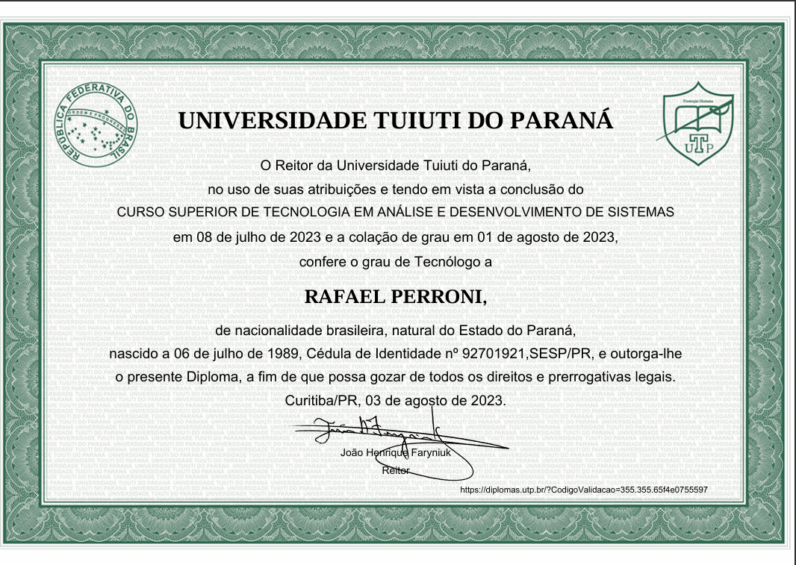
Curso Superior de Tecnologia em Análise e Desenvolvimento de Sistemas
Graduação tecnológica focada no ciclo completo de vida do software. A formação consolidou minha base em engenharia de software, modelagem de dados e gestão de projetos, permitindo-me atuar não apenas na codificação, mas na análise estratégica de soluções tecnológicas. Durante o curso, desenvolvi a capacidade de transformar requisitos de negócio em sistemas funcionais e escaláveis.
Bootcamp CAIXA - IA Generativa com Microsoft Copilot
Formação focada em aplicar IA e engenharia de prompts em finanças, empreendedorismo e carreira, em parceria com a CAIXA. Desenvolvi soluções práticas como um app de organização financeira inteligente, simuladores de entrevistas e mentores de carreira personalizados. O projeto destaca a integração de tecnologias como Microsoft Copilot para otimizar o cotidiano e criar produtos digitais inovadores.
IA Generativa e Agentes: Do Prompting à Construção de Copilotos
Finalizei o Bootcamp de Inteligência Artificial com foco em produtividade e automação, dominando desde fundamentos de LLMs até a criação de Agentes. Como projeto final, desenvolvi um consultor inteligente de livros que utiliza técnicas avançadas de prompting e organização de conhecimento para realizar buscas personalizadas. Essa formação consolidou minha capacidade de integrar IA Generativa em fluxos reais, transformando tecnologia em soluções práticas e competitivas.
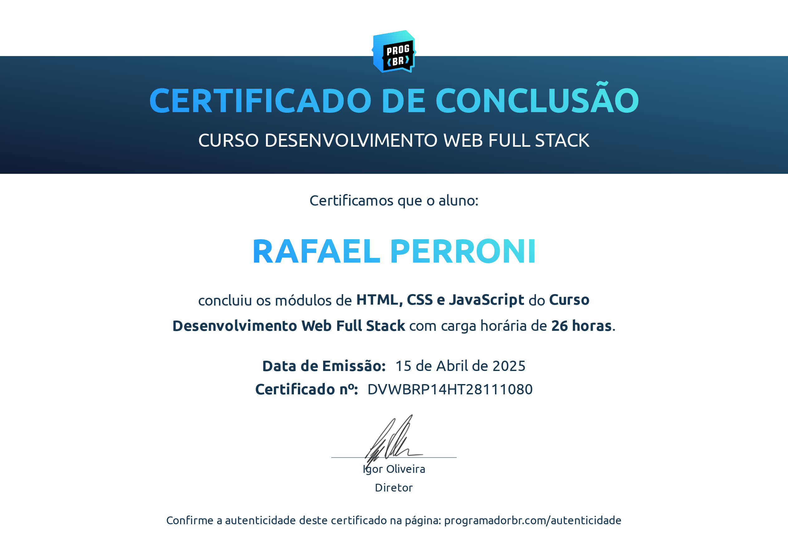
HTML, CSS e JavaScript
Módulo focado na tríade fundamental do desenvolvimento web. Aprofundei-me na estruturação semântica e acessível com HTML5, na criação de layouts responsivos e modernos utilizando CSS3 (incluindo Flexbox e Grid), e na implementação de interatividade dinâmica através da manipulação do DOM com JavaScript. Esta etapa consolidou a base necessária para a construção de interfaces web robustas e escaláveis.
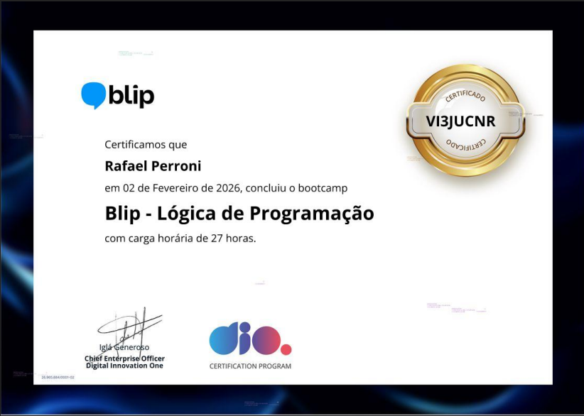
Blip - Lógica de Programação
Bootcamp para aprimoramento da lógica de programação da DIO em parceria com a Blip, onde consolidei os fundamentos essenciais do desenvolvimento de software. Durante a jornada, foquei na construção de algoritmos robustos utilizando JavaScript, além de aplicar na prática conceitos de versionamento de código com Git e GitHub. Essa experiência foi fundamental para estruturar meu raciocínio computacional, servindo como alicerce para meus projetos atuais em Front-end e React.
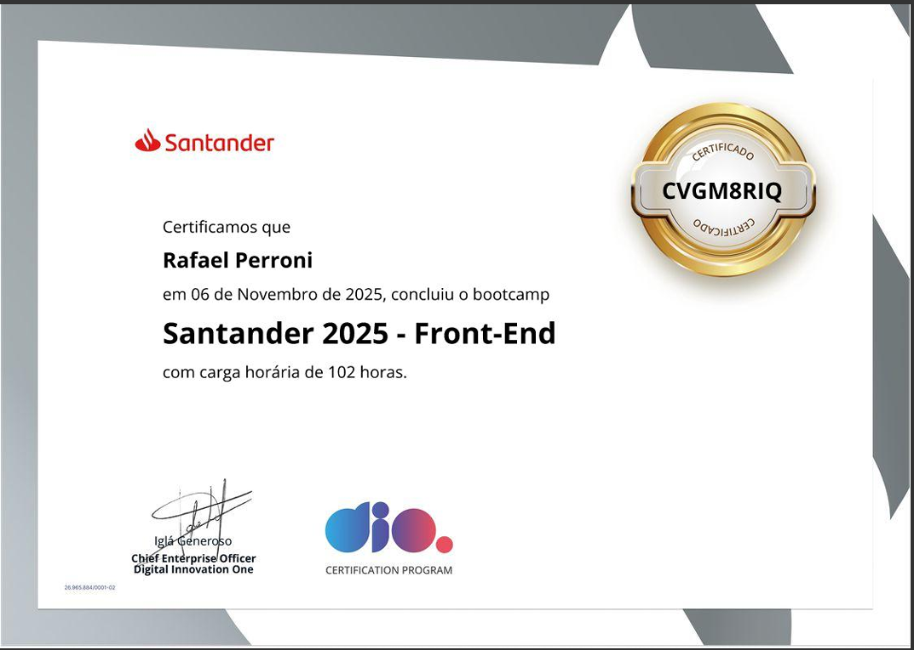
Bootcamp Santander - Front-End
Programa intensivo de especialização promovido pelo Santander. Focado na realidade do mercado de tecnologia, o bootcamp proporcionou uma imersão no desenvolvimento Front-end moderno. Através de mentorias com especialistas e desafios práticos, aprimorei a criação de interfaces responsivas e de alta performance, aplicando boas práticas de HTML5, CSS3 e JavaScript em cenários que simulam demandas reais de grandes empresas.
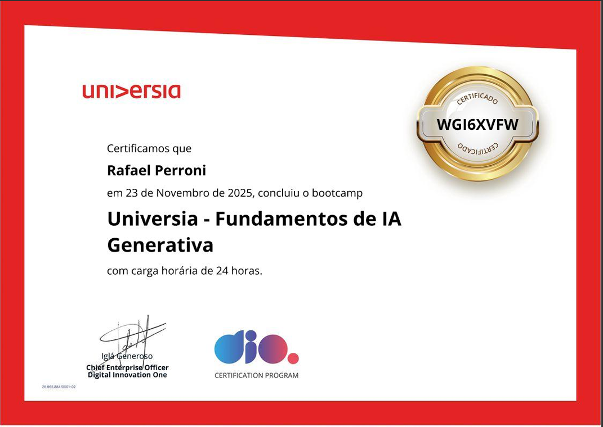
Universia - Fundamentos de IA Generativa
Imersão nos fundamentos e aplicações da Inteligência Artificial Generativa. O programa foi além da teoria, focando na Engenharia de Prompt e na utilização estratégica de LLMs (Large Language Models) para criação de conteúdo e resolução de problemas. Através de projetos práticos e mentorias, desenvolvi a capacidade de integrar ferramentas de IA em fluxos de trabalho reais para maximizar a eficiência e a inovação.
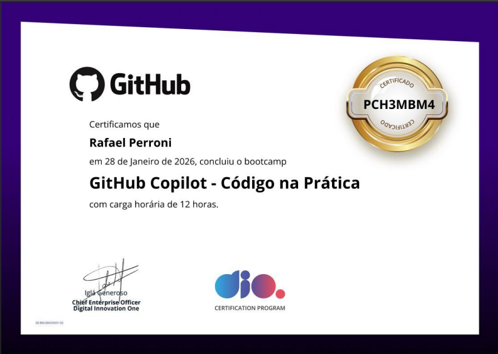
GitHub Copilot
Bootcamp focado na integração de IA Generativa ao fluxo de trabalho de desenvolvimento (DevOps). Aprendi a aplicar técnicas avançadas de Engenharia de Prompt para orientar o GitHub Copilot na geração de snippets de código, documentação técnica e tradução de lógica de negócios para sintaxe de programação. O curso consolidou minha habilidade de utilizar ferramentas de IA para resolver problemas complexos com maior agilidade.
Habilidades
Programacao
- HTML
- CSS
- JavaScript
- SQL
-
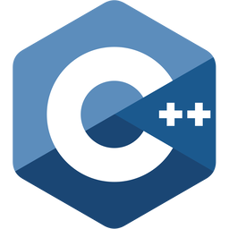
C++
Ferramentas
- VS Code
- Git
- GitHub
- Figma
- Postman
- Vercel
Idiomas
Português: Nativo
Inglês: Intermediário/Avançado
Espanhol: Básico
Projetos
Aplicações desenvolvidas integralmente por mim, do planejamento à implementação do código, focando em soluções de problemas e lógica própria.
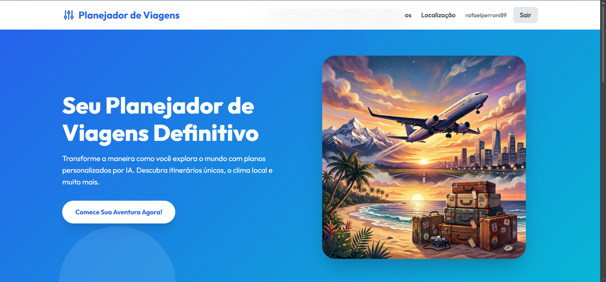
Viajante - Roteirista de Viagens
O Viajante é um planejador inteligente de itinerários de viagem que utiliza inteligência artificial (Google Gemini) para gerar roteiros dinâmicos e personalizados. Construído com JavaScript Vanilla, HTML5 e CSS modular, o projeto consome APIs de clima (OpenWeatherMap) e dados geográficos (REST Countries) para enriquecer a experiência. Conta com autenticação de usuários e persistência do histórico no Firebase (Auth/Firestore), além de uma arquitetura serverless segura na Vercel para proteger chaves e chamadas de API no backend.
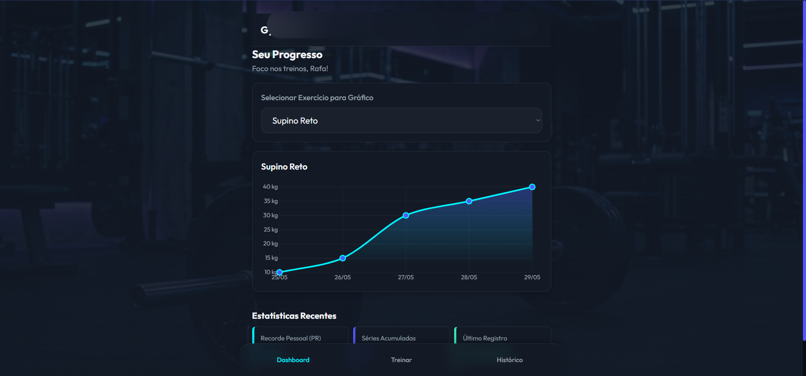
GymTracker
O GymTracker é uma aplicação web mobile-first para registro e acompanhamento de evolução de cargas em treinos de musculação. Com design escuro e premium em estilo neon, oferece autenticação segura via Firebase, um dashboard com gráficos de progressão (Chart.js), registro completo de exercícios com peso, séries e repetições, histórico filtrável e edição livre dos registros. Todo o frontend é construído em HTML5, CSS3 Vanilla e JavaScript ES6+ modular, sem frameworks, priorizando segurança contra XSS e performance. Os dados são armazenados e sincronizados em tempo real na nuvem via Firebase Firestore, garantindo acesso ao histórico de qualquer dispositivo.
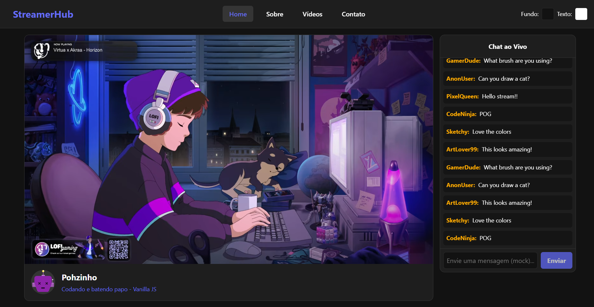
StreamerHub
O StreamerHub é uma Single Page Application (SPA) "White Label" focada em criadores de conteúdo, desenvolvida exclusivamente com Vanilla JS, HTML5 e CSS3. Seu principal diferencial é a navegação dinâmica de alta performance, que permite transitar entre seções enquanto mantém um player de vídeo persistente. A arquitetura modular garante segurança e velocidade, utilizando manipulação eficiente do DOM nativo e event delegation. A interface responsiva e imersiva inclui recursos interativos, como um chat ao vivo simulado e galerias otimizadas. É uma solução altamente customizável e de design premium, projetada para maximizar o engajamento do público.
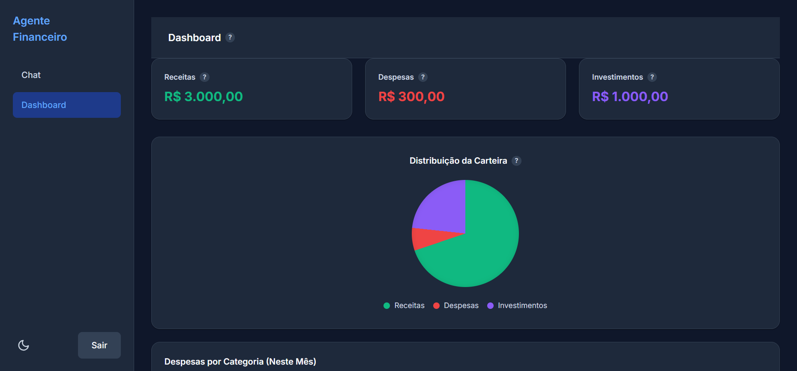
Agente Financeiro com IA
Aplicação full-stack que utiliza a API do Google Gemini para gerenciar finanças via linguagem natural, automatizando o registro de gastos e a geração de insights. Desenvolvido com JavaScript Vanilla, Node.js (Serverless) e MongoDB, o projeto foca em alta performance e na aplicação prática de IA Generativa para transformar a experiência do usuário na gestão de dados financeiros.
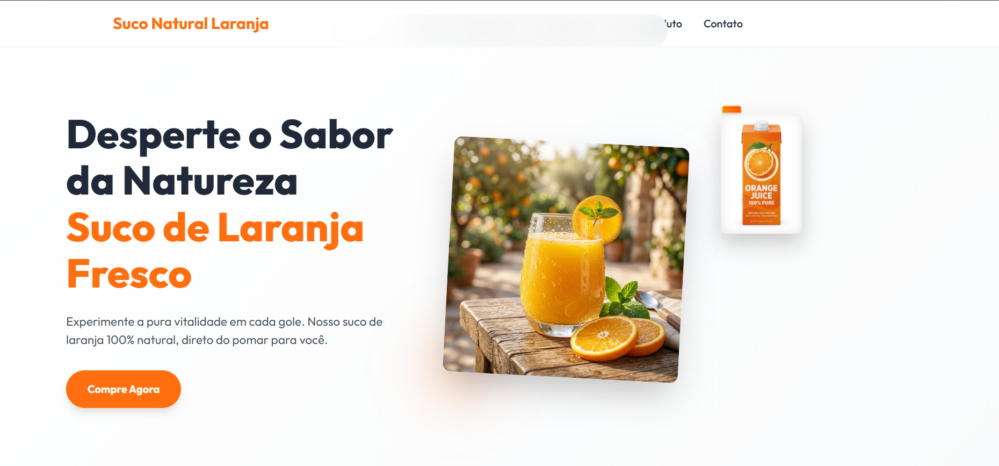
Sucoflesh, landing page de suco de laranja
O Sucoflesh é uma landing page interativa e responsiva para a venda de suco de laranja 100% natural. Desenvolvido com foco em performance e acessibilidade, utiliza exclusivamente tecnologias web nativas (HTML5, CSS3 e JavaScript Vanilla), sem frameworks externos. Apresenta design Mobile-first, animações baseadas no scroll e segue rigorosos padrões de segurança (prevenção XSS) e otimização, garantindo uma experiência digital rápida, sustentável e visualmente envolvente.
Receitas da Vó
O Receitas da Vó é um livro de receitas digital minimalista com estética editorial ('modo revista'), desenvolvido inteiramente com Vanilla JS, HTML5 e CSS3. Criado para oferecer uma experiência de usuário limpa e livre de distrações, o projeto destaca-se pela integração da IA do Google Gemini via funções Serverless (Vercel), permitindo importar e estruturar receitas automaticamente a partir de qualquer link. A arquitetura dispensa dependências externas pesadas e otimiza recursos usando a API nativa do HTML5 Canvas para compressão de imagens no lado do cliente, salvando-as em Base64 diretamente no Cloud Firestore. Uma solução full-stack escalável, ágil e focada em performance, comprovando o poder do desenvolvimento web nativo.
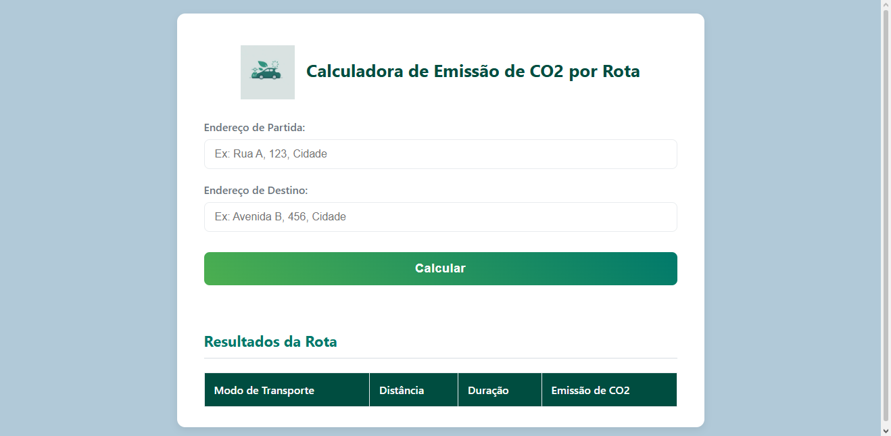
Calculadora de Impacto Ambiental
Calculadora de impacto ambiental que transforma dados estáticos em precisão geográfica. Tomei a iniciativa de integrar uma API de rotas para calcular emissões baseadas em distâncias reais, demonstrando autonomia na busca de soluções técnicas fora do briefing original.
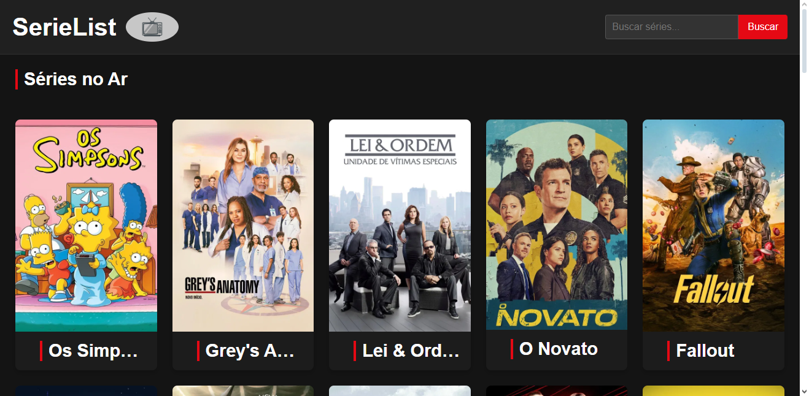
SerieList
Plataforma de exploração de catálogo que consome a API TMDb para renderização dinâmica de dados. Implementei sistemas de busca em tempo real e visualização de trailers via modais, focando em uma arquitetura de componentes reutilizáveis com JavaScript Vanilla.
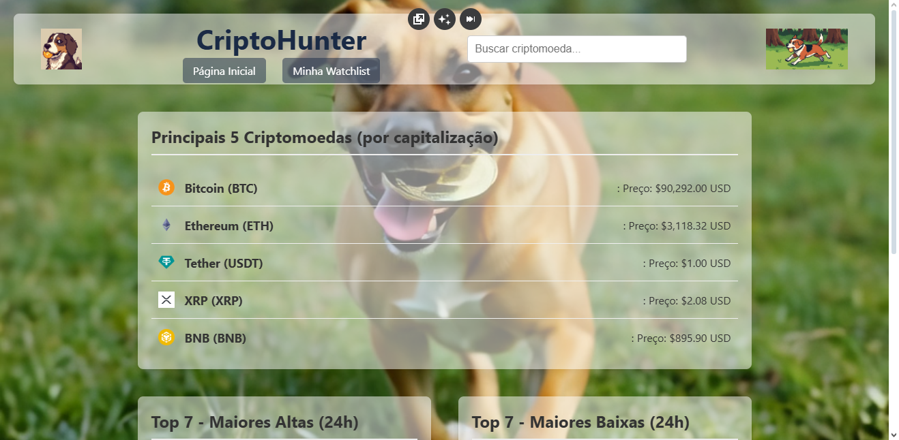
CriptoHunter
Dashboard de monitoramento de ativos financeiros integrado à CoinGecko API. A aplicação processa variações percentuais para destacar os 'Top Gainers' e 'Top Losers' do mercado, exigindo manipulação avançada de arrays e lógica de filtragem de dados.
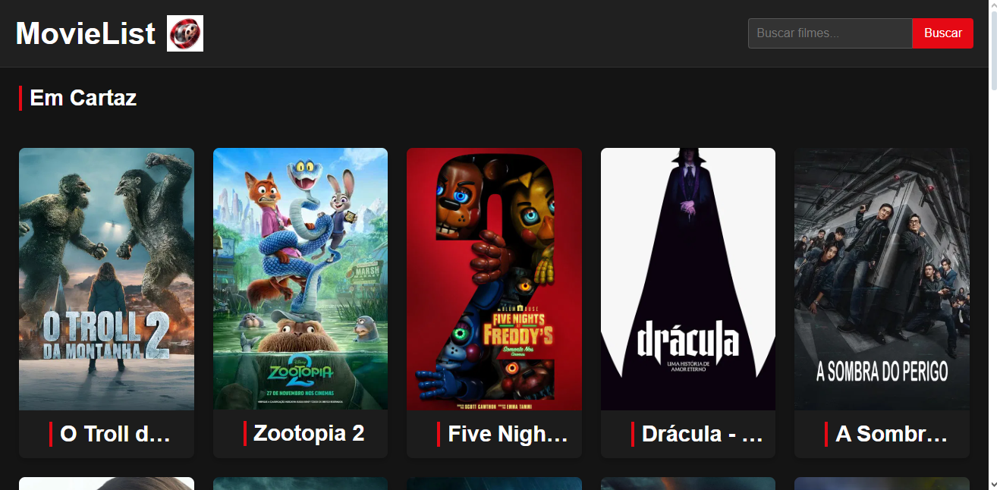
MovieList
Aplicação focada em integridade de dados para combater a desinformação em trailers de filmes. Utiliza consumo estratégico de API para garantir conteúdos oficiais, priorizando uma experiência de usuário confiável e uma navegação fluida.
Quadro de Ideias
Ecossistema de produtividade 100% autoral. Desenvolvi ferramentas interativas de desenho e gerenciamento de tarefas usando JavaScript puro, priorizando alta performance e baixo consumo de recursos em dispositivos limitados.

JPerroni
Landing Page institucional para empresa familiar, desenvolvida com foco em performance e SEO. O projeto serve como base para um futuro sistema de orçamentos automatizados, aplicando conceitos de design responsivo e arquitetura limpa.
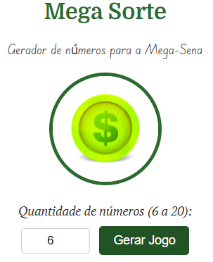
Mega-Sorte
Simulador de probabilidades desenvolvido para aplicar estruturas complexas de repetição, condicionais e funções. Um projeto recorrente em minha jornada para validar o domínio da lógica fundamental em novas linguagens de programação.
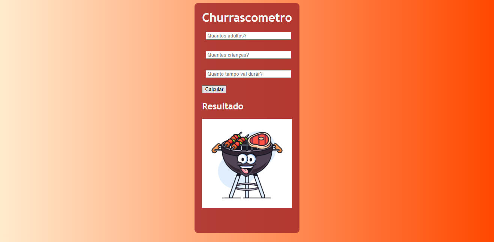
Churrascômetro
Ferramenta de cálculo de suprimentos com lógica baseada em variáveis de tempo e perfil de consumo. O sistema processa entradas dinâmicas para gerar previsões precisas de insumos, demonstrando aplicação prática de funções matemáticas em JavaScript.
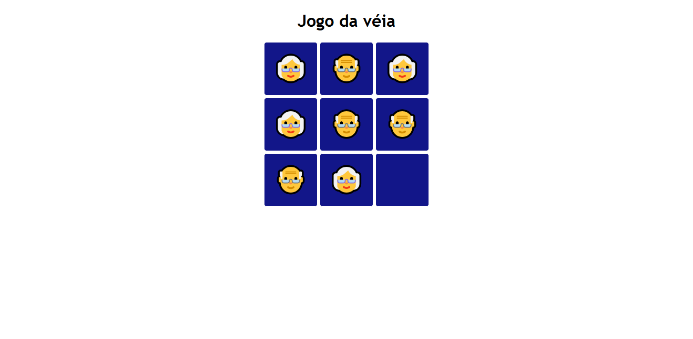
Jogo da Velha
Implementação clássica focada em lógica de estados e validação de matrizes. Desenvolvida com foco em responsividade total, garantindo uma experiência consistente em qualquer resolução ou dispositivo.
Outros Projetos
Implementações baseadas em orientações de mentores, onde foquei em refinar funcionalidades específicas e adaptar layouts sobre bases já existentes.
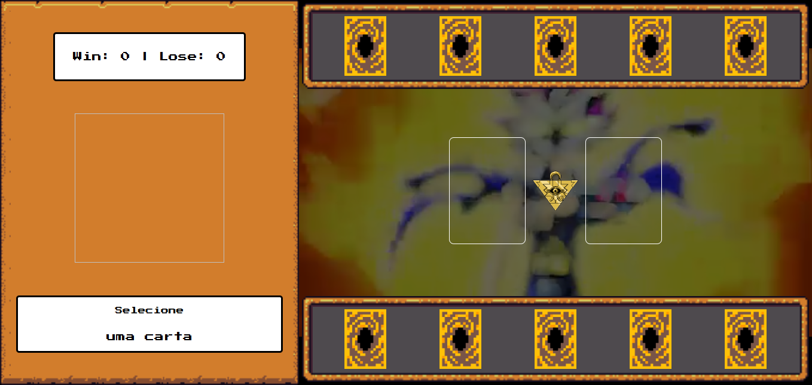
Yu-Gi-Oh! Game Logic
Neste projeto de estudo dirigido, foquei na expansão da lógica de estados e regras de negócio. Implementei um sistema de gerenciamento de turnos para partidas de 5 rodadas e desenvolvi mecanismos customizados de vitória/derrota, aprimorando a estrutura original com funções de validação mais robustas.
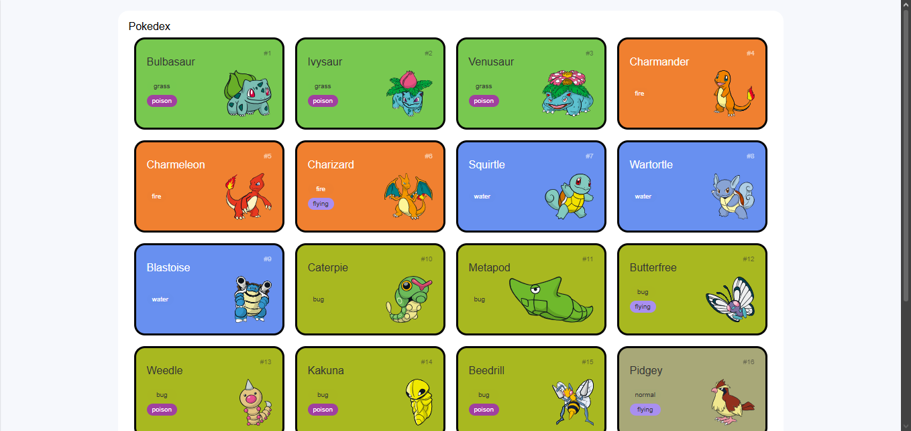
Pokedex Engine
Estudo de integração avançada com a PokéAPI. Trabalhei na refatoração da interface de usuário (UI) e na implementação de uma tela de detalhes dinâmica, otimizando o fluxo de dados e a paginação dos elementos consumidos via requisições assíncronas.
Extensões
Extensões desenvolvidas para navegadores, focando em produtividade e melhoria da experiência do usuário.
Anotai
Desenvolvida com JavaScript Vanilla, HTML e CSS, esta extensão para Google Chrome simplifica a criação e o gerenciamento de notas rápidas com foco total em inclusão e usabilidade. A ferramenta oferece recursos avançados de acessibilidade, permitindo a personalização do tamanho da fonte e suporte nativo a uma tipografia específica para pessoas com dislexia, garantindo uma leitura confortável, eficiente e uma experiência de navegação otimizada para todos os perfis de usuários.
PromptBox — Gerenciador de Prompts
O PromptBox é um repositório pessoal de prompts para IA direto no navegador, projetado para organizar e recuperar comandos do ChatGPT, Claude e Midjourney com apenas um clique. Desenvolvida inteiramente em JavaScript Vanilla, HTML e CSS, a extensão oferece busca instantânea, sincronização em nuvem via Supabase com segurança RLS e um sistema de pastas para máxima produtividade, entregando uma ferramenta ultra-leve de apenas 509KB com performance nativa e zero dependências de frameworks.